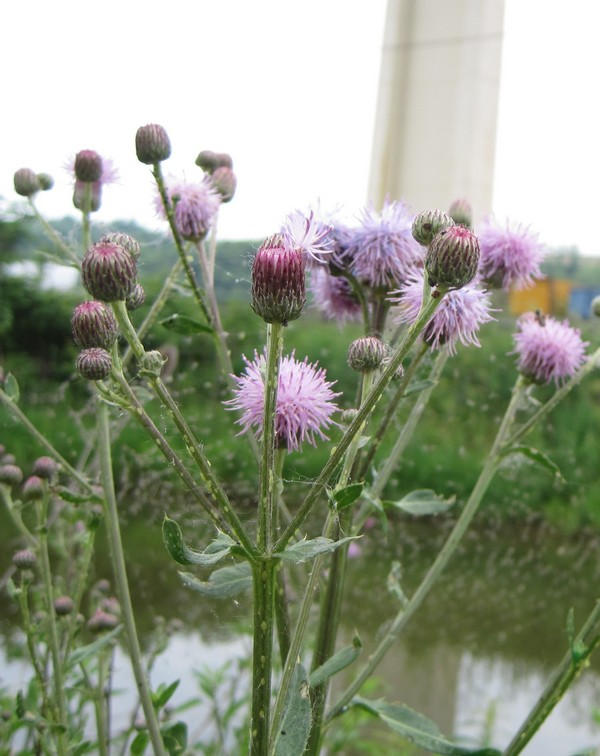

photo: Cleveland Metroparks
Canada Thistle (Cirsium arvense)
 Cleveland Metroparks |
Cleveland Metroparks |
 Cleveland Metroparks |
{kind=link}
Form:
Herbaceous perennial, 2-6.5' tall with upright, grooved stems that branch near top of plant. Native to Eurasia, despite the widely used common name.
Leaves:
Alternate, oblong, irregularly lobed, tapering, with spiney, toothed margins, and sessile. Amount of spininess and lobing varies between plants.
Flowers:
Numerous, small (0.5-0.75" wide), purple to pink (rarely white) terminal flower heads. Bloom throughout summer. Most plants are dioecious.
Fruits & Seeds:
Small, light brown with a tan pappus that assists in wind dispersal. One plant can produce up to 5,000 seeds, and seeds remain viable in the soil for up to twenty years.
Roots:
Reproduces clonally by creeping roots that grow laterally in soil, up to 10-12' per year. Also produces taproots that may grow more than 6' deep. Readily regenerates from root fragments.
Tier 4 - Widespread and Abundant
These are known problem species throughout Cleveland Metroparks and are currently under active management. Management plans are set using population extent and site-specific information.
Action: These plants should be recored as present or absent. These species are known to be widespread and abundant throughout Cleveland Metroparks.